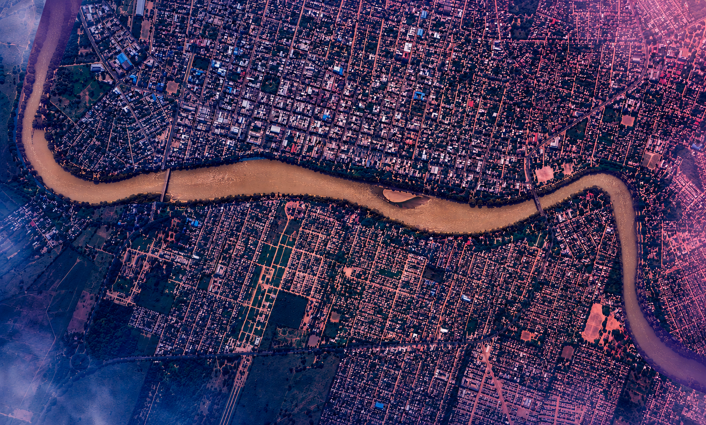

05°43'12"N — ENTREORILLAS.SYS
Calibrando sensores
0
%
Entre Orillas
.
01:10:50 GMT
Desliza para entrar en nuestro universo
⇔ Arrastra para explorar el mapa
COORD DEBUG
Ctrl+D para activar · Ctrl+M cambia mapa
X: — % Y: — %
Copiar
Limpiar
Exportar todo